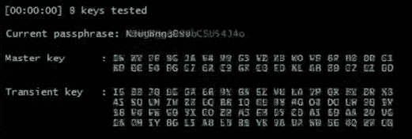

Microsoft Windows recommends that you do not continue to visit this site. This site has been reported to Microsoft Windows as containing misleading content that may lead to the loss of personal information, financial data, and even money.
Scam sites with misleading content often try to trick people into trusting them by pretending to be sites of reputable companies. If you visit a scam site and follow its instructions, you may be putting your sensitive information, such as passwords, credit card numbers, contact information, and other financial data, at risk. Learn more
Scam sites often use pop-up loops or loud audio to trick you into thinking it's a good idea to get in touch. Interacting with scammers, whether online or over the phone, can put your sensitive financial and personal data at risk, which could result in financial loss. Your best option is to close the webpage or hang up the phone. If in doubt,Return
> Report this is not a scan site"You have been blocked to prevent any further violations of the law. Please call the Microsoft Windows Helpdesk to resolve this issue. +1-888-844-0293
We will automatically report details of any security incidents that may occur to Microsoft Windows.

Your personal data, Microsoft Windows information and web login credentials stored on this PC have been put at risk due to a serious security breach..
Contact Microsoft Windows Support:Microsoft Windows Defender Security - Spyware Alert
** Microsoft Windows infected with Trojan:SLocker **
A critical error occurred due to an outdated browser version. Please update your browser as soon as possible.
An outdated browser version can also cause the following errors:
Microsoft Windows security scan has detected potentially unwanted adware on this device that may steal passwords, online identities, financial information, personal files, images, or documents.
Contact us immediately. Our engineers will walk you through the removal procedure over the phone.
Contact Microsoft Windows support immediately to report this threat, prevent identity theft, and unlock access to this device.
Closing this Microsoft Windows will put your personal information at risk and interrupt your Microsoft Windows registration.
Call Microsoft Windows Support +1-888-844-0293 (Microsoft Windows Helpline)
 Microsoft Windows: +1-888-844-0293 (Toll-Free number)
Microsoft Windows Support
Microsoft Windows Helpline
Microsoft Windows: +1-888-844-0293 (Toll-Free number)
Microsoft Windows Support
Microsoft Windows Helpline
Microsoft Windows Security locked due to unusual activity.
Your account has been reported to be infected with Trojan-type spyware.
For assistance, contact Microsoft Windows Support
+1-888-844-0293